Dungeons & Dragonsv Jeseníku

D&D vyšlo v roce 1974 jako první stolní RPG na světě a stalo se inspirací pro mnoho dalších her. Za ta desetiletí kolem něj vyrostly jedny z největších fantasy světů, jaké kdy existovaly.
Pro nás v Yes& fantasy klubu Jeseník je Dungeons & Dragons víc než jen hra na hrdiny – je to způsob, jak se potkat, poznat nové lidi a zažít společné příběhy.
D&D není kompetitivní hra. Hráči společně vyprávějí příběh, naslouchají si a reagují na rozhodnutí ostatních. Vydáme se spolu do fantastického světa plného dobrodružství, kde hrdinové:
- čelí etickým dilematům
- bojují s příšerami
- objevují tajemství
- potkávají zajímavé postavy
- překonávají výzvy jako tým
Kromě samotné hry D&D přirozeně pomáhá budovat přátelství, důvěru a komunitu, se kterou zažiješ spoustu nezapomenutelných okamžiků.
👉 Chceš si vytvořit vlastní postavu a vydat se na dobrodružství? Přidej se — vše ti ukážeme a poradíme.
Chci si zahrát D&DWe are looking for someone
to share in an adventure.
Jeseník or remote.
Deborah Ann Woll — na konkrétní hře ukazuje, jak D&D funguje
Wizards of the Coast — startovní set, kterým se dá s D&D začít
Jsi připraven/a zažít vlastní epické dobrodružství? Na začátku hry si vytvoříš jedinečnou postavu, skrze kterou můžeš být sám/sama sebou, nebo si vyzkoušet úplně jinou roli – v bezpečném a podporujícím prostředí. Hru vede Dungeon Master, který vypráví příběh, a 1–6 hráčů ho svými rozhodnutími ovlivňuje. Základní mechanikou je hod dvacetistěnnou kostkou, jinak stačí tužka, papír a fantazie.
V Yes& hrajeme podle pravidel D&D 5.5e (2024) přes D&D Beyond – pravidla vyšla i v českém překladu pod názvem Jeskyně a Draci.
Chceš vést vlastní epické dobrodružství a stát se součástí nové generace D&D vypravěčů a vypravěček? Nemusíš mít zkušenosti – pomůžeme ti začít.
Chci se stát Dungeon Masterem
Mechanika hry je jednoduchá na naučení: o výsledku akcí rozhoduje hlavně dvacetistěnná kostka (d20) v kombinaci s vlastnostmi postavy, Dungeon Master vede svět a příběh, hráči vytvářejí a rozvíjejí vlastní postavy podle pravidel D&D 5.5e/2024, které vyšly i v českém překladu pod názvem „Jeskyně a Draci“.
Hrát se dá offline u stolu i online přes video a virtuální herní stoly – u nás v klubu preferujeme osobní setkání v Jeseníku, ale nebráníme se ani online sezením s hráči z jiných měst.
Dungeons & Dragons ti umožní zažít, že neexistuje jen jedna správná cesta. Neúspěch tu není chyba, ale příležitost vymyslet nové řešení a učit se z vlastních rozhodnutí. Kromě zábavy D&D přirozeně rozvíjí kreativitu, empatii, aktivní naslouchání, respekt k ostatním, týmovou spolupráci, komunikaci i schopnost řešit výzvy společně.
D&D se využívá rovněž ve školství a terapii: D&D Educator resources; UnBoxed; Game to Grow; Megan A. Connell; Extra Life; Let's Roll; Playing D&D Can Save Your Life.
Critical Role — nejznámější D&D show světa
Exandria Unlimited — jak se u stolu vypráví příběh. Vede Brennan Lee Mulligan, podle nás nejlepší DM.
The Legend of Vox Machina — animovaný seriál podle D&D kampaně Critical Role
Co u nás ještě hrajeme
- Magic: The Gathering — Modern, Pauper, Pioneer a Commander, čtvrtletní draft
- Warhammer 40k Kill Team — skirmish bitvy s miniaturami a malování figurek
- Šerm a LARP — HEMA – dlouhý meč, trénink do akce